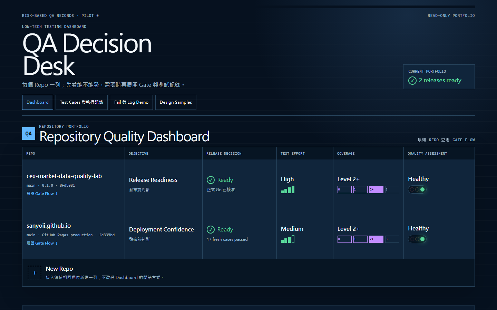
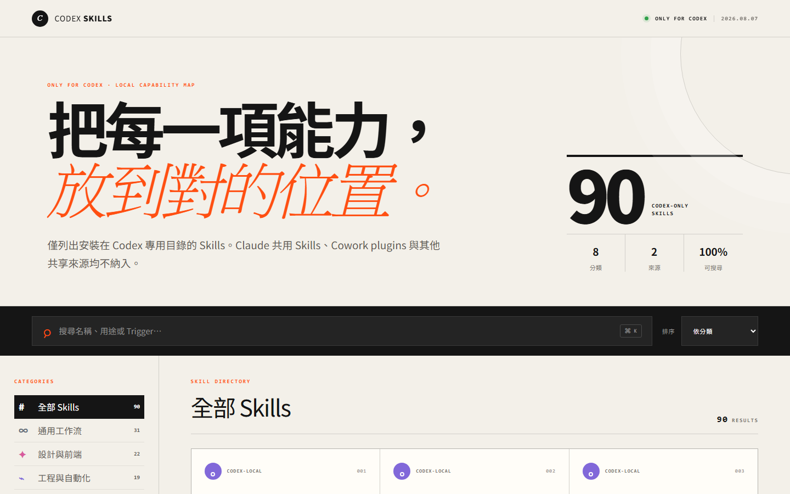

BTSE
Trading, commissions, and conversion
I found and reported three high-severity defects through boundary testing and financial checks. The case records my methods and what remained unresolved.
Read BTSE caseWeb3 product quality · Taiwan (UTC+8)
Senior QA Engineer · Product Quality · Web3 / Crypto
I have 12+ years across software QA and customer engineering, including crypto exchange testing, security-product troubleshooting, and automation team leadership.
Based in Taiwan, seeking fully remote roles with 4+ hours of European business-hour overlap on weekdays.
Choose a case for the role you are hiring: CEX product quality, automation leadership, or technical support. Each case explains my contribution and the result.
BTSE
I found and reported three high-severity defects through boundary testing and financial checks. The case records my methods and what remained unresolved.
Read BTSE caseASML / Zealogics
I led six engineers and planned the workflow within the existing TestComplete architecture. The team implemented most of the code; connection failures still required manual investigation.
Read ASML caseTrend Micro
My work covered reproducing incidents, diagnosing causes, validating hotfixes, and improving proactive tests and diagnostic guides. These two cases cover the different parts.
My experience spans crypto exchange testing, security incident investigation, and test automation.
Senior QA Engineer · centralized crypto exchange
Tested Wallet, Referral and Affiliate, Spot, Futures, Convert, fees, funding, liquidation, and KYC on BTSE's centralized crypto exchange. Identified and escalated three high-severity defects across trading, referral commission, and conversion flows.
Project Leader / Senior Automation Test Engineer
Led six Automation Engineers across three ASML HMI modules. Designed the setup-to-reset lifecycle within the existing TestComplete architecture so the normal workflow could run unattended. Planned reusable modules and technical handover; the engineers completed most implementation coding.
QA Engineer → Senior Customer Service Engineer → Senior QA / Customer Service Engineer
As SEG Leader, I checked escalation evidence and assigned cases by priority, complexity, and workload. I initiated a DLP diagnostic guide; manager-reported figures showed a 20-percentage-point drop in missing-data case returns in its first month. I also built Python monitoring for Chrome updates and proposed a supported-site scanning design to reduce resource use. Received internal SEG awards in 2019 and 2021.
I build tools around real constraints: traceable data, explicit guardrails, and workflows another person can verify.
Python / pytest · REST and WebSocket testing
Tests public market-data snapshots and updates for stale events, sequence gaps, and invalid order-book values. Includes test design, executable checks, and versioned results. Uses Binance public APIs; separate from my employment at BTSE.
Public market data only. No account, order, or funds testing. Live results apply to the recorded revision and date.
Portfolio demonstration. Check each record's scope, revision, and freshness before interpreting its status.
A dashboard for reviewing test results and evidence
A passing result needs a tested version, a clear scope, and supporting evidence.
Consolidates test evidence from two repositories into traceable release decisions. Each row shows the decision, rationale, and evidence link. The dashboard keeps freshness, Unknown states, Gate Flow, and sanitized public boundaries explicit.

Preview or description only; no public demo or source is linked for these projects.

Preview only here; no public demo or source linked.
Human Design reading generator, a personal AI-tooling project
A personal project that presents Human Design readings as a visual report.
Uses birth details to calculate a chart and generate a 13-section visual report. Each section starts with a plain-language explanation, with terminology available in expandable sections.
Preview only here; no public demo or source linked.
Searchable capability map for my Codex setup
A Skill is only useful if I can find it when the task appears.
Generates a searchable inventory from effective Codex Skills, grouped by category, source, and trigger keywords. Disabled Skills stay out, so installed files are not confused with active capabilities.

Description only here; no public demo or source linked.
Job-search co-pilot for the Taiwan market
This project compares job requirements with resume content to prepare tailored drafts.
Parses job postings, compares them with a resume, and exports PDFs. It includes ATS compatibility checks and limits on inferred keywords. Generated content still needs review.
Forked from an open-source project. My contributions: PDF export, ATS compatibility checks, resume-parsing guards, keyword-inference limits.
Career break (caregiving) · self-directed study in AI and software architecture
Senior QA Engineer · Nogle (BTSE)
Project Leader / Senior Automation Test Engineer · Zealogics (client: ASML)
QA Engineer → Senior Customer Service Engineer → Senior QA / Customer Service Engineer · Trend Micro
Firmware Engineer · Tatung
MS, Information Engineering and Computer Science · Feng Chia University · 2003–2005
BS, Information Engineering and Computer Science · Feng Chia University · 1998–2003
Test craft
Automation
Customer support
Languages and platforms
Web3 and financial product quality
Hiring for QA or technical support? Get in touch.